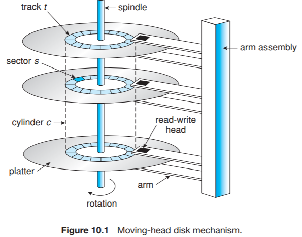

前言
這部分在過去的OS課一定都學過了，不過因為滿有趣的而且也是平常常看到的名詞卻沒有去釐清而衍生了很多的問題，所以大致上來記錄一下。
磁碟系統概述

首先談談Disk System(磁碟系統)的組成。
他是由多片的Disks(磁碟)所組成，通常每片Disk的雙面都可以儲存資料，而每一面由很多條的Tracks(磁軌)組成，而每條磁軌又可以劃分成多個Sectors(磁區)。
前面有提到這是由多片的Disks所組成，因此在上圖來看：不同面卻相同Track No所形成之組合則稱為Cylinder(磁柱)。
落落長的講了一堆，但總言之就是：Disk System：Disk > Track > Sector
範例：
Disk System有10片Disks，每片有2048條Tracks，每條有521個Sectors，每個Sectors可存16KB。
每片的雙面皆可存，但最上與最下面不可存。
則：1
2
3( 10 * 2 - 2 ) * 2048 * 512 * 16KB
= 18 * 211 * 29 * 26 * 210 Bytes = 18 * 16GB
= 288GB
這288GB就是我們一般所知的硬碟大小。
常見名詞解釋
再來就是跟大家使用硬碟時息息相關的Disk Access Time(磁碟存取時間)。
我們再使用磁碟的存取時間時，一般是由三個運作時間加總而得的：
1.Seek Time
簡單的說，就是花在找Track的時間。
將磁頭移動到欲存取的Track上方所花之時間。
2.Latency Time(或稱revolution time/rotation time)
簡單的說，就是下一步花在找Sector的時間。
當磁頭移動到目標Track時，此時Disk會自己轉動欲存取的Sector到磁頭下方。
3.Transfer Time
簡單的說，就是將Data傳到Memory之間的傳輸時間。
上述三者通常以Seek Time最花時間，因為其主要是以I/O的硬體運作為主，也因此在Latency Time的部分變成是以運轉Disk本身而非移動磁頭了。
範例計算
那麼，相關的轉速的計算就是我們平常常常遇到卻不甚了解的部分。
例1：
Disk轉速：7200rpm，求Avg. revolution time.(rpm=revolution per minute)
7200rpm = 1分鐘Disk可以轉7200圈
= 1秒鐘Disk可以轉120圈(相信大家現在大概可以感受磁碟讀取的聲音跟轉速的關係了吧XD)
所以Disk轉一圈需要花1/120秒。
那麼依據統計學的中央極限定理CLT可以估計平均值即是成常態分配於正中央位置
因此平均revolution time = 0.5*1/120=1/240 秒
例2：
Disk轉速：6000rpm，Disk每面有2048條Tracks，每條Track有256個Sectors，每個Sector可存4KB。
求Transfer Rate ?
6000rpm = 1秒鐘Disk可以轉100圈
(因為每一面Disk是由許多Tracks所組成的，當磁頭移動到目標Track的時候，就換成要讓Disk自轉目標Sector下，因此Disk每轉一圈救代表可以傳輸一條Track之容量。)
而每一條Track之容量 = 256*4KB = 1MB
因此Transfer Rate = 100*1MB/sec = 100MB/sec
例3：
承例2，若File大小為5MB，Disk之平均Seek Time為2秒，則read this file 需要花？秒
Disk Access Time = Seek Time + Latency(Revolution) Time + Transfer Time
＝ 2秒 + 0.5 * 1/100秒 + 5MB/100MB (sec)
＝（2+1/100+1/20）秒
結論
這篇文章最初是在2010/9的時候發的，之後我也沒有在研究相關領域的東西，而是往軟的方向走了。現已普及的SSD大概也不是用這種概念在運行的吧，只是覺得之前的文章跑版亂糟糟所以又重新翻修了一次。
總之，這篇文章就留給還在苦讀考試會考的計組學生用吧…